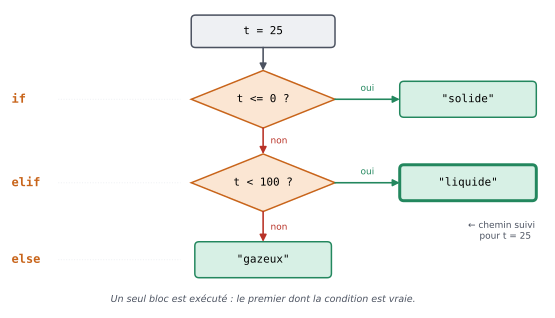

2. Les conditions#
Objectifs du chapitre
À la fin de ce chapitre, vous saurez :
écrire des comparaisons (
<,==,!=…) et les combiner (and,or,not) ;exécuter des instructions seulement si une condition est vraie (
if) ;choisir entre plusieurs cas (
else,elif) ;respecter les règles d’indentation de Python.
Prérequis : chapitre 1. Durée indicative : 1h30.
Jusqu’à présent, nos programmes exécutaient toutes leurs instructions, dans l’ordre, sans exception. Mais souvent, on souhaite qu’un programme réagisse différemment selon la situation : afficher « admis » ou « ajourné » selon une note, appliquer une réduction seulement aux étudiants, etc. C’est le rôle des structures conditionnelles.
2.1. Les booléens et les comparaisons#
Une condition est une expression qui est soit vraie, soit fausse.
En Python, son résultat est un booléen (type bool) : True (vrai) ou False (faux).
note = 12
print(note >= 10)
print(note == 20)
True
False
Voici les opérateurs de comparaison à connaître :
Opérateur |
Signification |
Exemple (avec |
Résultat |
|---|---|---|---|
|
strictement plus petit que |
|
|
|
strictement plus grand que |
|
|
|
plus petit ou égal à |
|
|
|
plus grand ou égal à |
|
|
|
égal à |
|
|
|
différent de |
|
|
|
test d’identité, pour comparer à |
|
|
|
contraire de |
|
|
|
présence d’une valeur dans une liste |
|
|
À retenir
Pour tester l’égalité, on utilise == (deux signes égal).
Un seul = sert à affecter une valeur à une variable.
x = 5: «xprend la valeur 5 » (affectation) ;x == 5: « est-ce quexvaut 5 ? » (comparaison, qui donneTrueouFalse).
Les comparaisons fonctionnent aussi avec les chaînes de caractères :
prenom = "Aude"
print(prenom == "Aude")
print(prenom == "aude") # attention, la casse compte !
print("a" < "b") # ordre alphabétique
True
False
True
2.1.1. Combiner des conditions : and, or, not#
On peut combiner plusieurs conditions à l’aide des opérateurs logiques :
A and Best vrai si A et B sont tous les deux vrais ;A or Best vrai si au moins l’un des deux est vrai ;not Aest vrai si A est faux (et inversement).
age = 20
etudiant = True
print(age >= 18 and etudiant) # majeur ET étudiant
print(age < 12 or age > 65) # enfant OU senior
print(not etudiant)
True
False
False
Pour tester si une valeur est comprise dans un intervalle, Python autorise une écriture proche des mathématiques :
note = 14
print(10 <= note < 20) # équivaut à 10 <= note and note < 20
True
Testez-vous
Avec a = 3 et b = 8, que valent les expressions suivantes ?
a > 2 and b > 10a > 2 or b > 10not (a == 3)a != ba < b < 5
Réponse
False:a > 2est vrai maisb > 10est faux, etandexige que les deux soient vrais ;True: il suffit que l’une des deux conditions soit vraie ;False:a == 3est vrai, donc sa négation est fausse ;True;False:a < best vrai maisb < 5est faux.
2.2. L’instruction if#
Pour n’exécuter des instructions que si une condition est vraie, on utilise le mot-clé if (« si » en anglais) :
x = 12
if x > 0:
print("x est positif")
print("x n'est pas négatif")
print("Fin du programme")
x est positif
x n'est pas négatif
Fin du programme
Observez bien la syntaxe :
la ligne du
ifse termine par deux-points:;les instructions à exécuter si la condition est vraie sont indentées, c’est-à-dire décalées vers la droite (de 4 espaces, ou d’une tabulation) : elles forment un bloc ;
le bloc se termine dès qu’une ligne revient au niveau d’indentation du
if: ici,print("Fin du programme")est exécutée dans tous les cas.
Si l’on change la valeur de x pour une valeur négative, seule la dernière ligne est exécutée :
x = -3
if x > 0:
print("x est positif")
print("x n'est pas négatif")
print("Fin du programme")
Fin du programme
À retenir : l’indentation
Dans beaucoup de langages, l’indentation n’est qu’une convention de présentation.
En Python, elle fait partie de la syntaxe : c’est elle qui indique à Python où commence et où se termine un bloc.
Un mauvais décalage change le sens du programme, ou provoque une erreur.
La plupart des éditeurs (dont Thonny) indentent automatiquement après un : ; utilisez la touche Tab et évitez de mélanger tabulations et espaces.
Testez-vous
Qu’affichent ces deux programmes, qui ne diffèrent que par l’indentation de la dernière ligne ?
# Programme A # Programme B
note = 8 note = 8
if note >= 10: if note >= 10:
print("Admis") print("Admis")
print("Bravo") print("Bravo")
Réponse
Le programme A n’affiche rien : la condition est fausse et les deux print font partie du bloc du if.
Le programme B affiche Bravo : le second print n’est pas indenté, il ne fait donc pas partie du bloc et il est exécuté dans tous les cas (ce qui n’est sans doute pas ce que l’on voulait !).
2.3. else : sinon…#
Souvent, on veut exécuter un bloc si la condition est vraie, et un autre bloc sinon.
On utilise alors le mot-clé else (« sinon ») :
note = 8
if note >= 10:
print("Admis")
else:
print("Ajourné")
Ajourné
Le mot-clé else est placé au même niveau d’indentation que le if auquel il se rapporte, suivi lui aussi de :.
Un seul des deux blocs est exécuté, jamais les deux.
2.4. elif : sinon si…#
Lorsqu’il y a plus de deux cas, on enchaîne les tests avec elif (contraction de else if, « sinon si ») :
t = 25
if t <= 0:
print("L'eau est solide")
elif t < 100:
print("L'eau est liquide")
else:
print("L'eau est gazeuse")
L'eau est liquide
Python teste les conditions dans l’ordre et exécute uniquement le bloc de la première condition vraie ; si aucune n’est vraie, c’est le bloc else (facultatif) qui est exécuté.


Fig. 2.1 Le chemin suivi par le programme précédent pour t = 25 : la première condition est fausse, la deuxième est vraie, on affiche donc « liquide » et on ignore la suite.#
Voir ce code s’exécuter pas à pas dans Python Tutor
Remarquez qu’on n’a pas eu besoin d’écrire elif t > 0 and t < 100 : si l’on arrive au elif, c’est que la condition t <= 0 était fausse, donc que t > 0.
Erreur fréquente : l’ordre des tests
Comme seule la première condition vraie compte, l’ordre des tests est important. Que penser du programme suivant, censé attribuer une mention ?
note = 17
if note >= 10:
print("Passable")
elif note >= 14:
print("Bien")
elif note >= 16:
print("Très bien")
Il affiche Passable pour une note de 17 ! En effet, la première condition (note >= 10) est vraie, donc les suivantes ne sont même pas testées.
Il faut tester les conditions de la plus restrictive à la moins restrictive : d’abord note >= 16, puis note >= 14, puis note >= 10.
Testez-vous
Qu’affiche ce programme pour x = 5 ? Pour x = -1 ? Pour x = 0 ?
if x > 0:
print("A")
elif x > -2:
print("B")
else:
print("C")
print("D")
Réponse
Pour
x = 5:ApuisD;pour
x = -1:BpuisD(la première condition est fausse, la seconde est vraie) ;pour
x = 0:BpuisD(0 n’est pas strictement positif, mais il est bien plus grand que -2).
Dans tous les cas, D est affiché puisque cette ligne ne fait partie d’aucun bloc.
2.5. Conditions imbriquées#
Un bloc peut lui-même contenir un if : on parle de conditions imbriquées.
Chaque niveau d’imbrication ajoute un niveau d’indentation.
age = 20
etudiant = True
if age >= 18:
if etudiant:
print("Tarif étudiant : 5 euros")
else:
print("Plein tarif : 9 euros")
else:
print("Tarif enfant : 4 euros")
Tarif étudiant : 5 euros
Lorsque c’est possible, on préfère toutefois éviter les imbrications trop profondes, qui rendent le code difficile à lire : un and ou un elif permettent souvent de « mettre à plat » la structure.
Erreurs fréquentes de ce chapitre
Message d’erreur |
Cause probable |
|---|---|
|
les deux-points oubliés à la fin d’une ligne |
|
la ligne qui suit un |
|
une ligne est indentée alors qu’elle ne devrait pas l’être |
|
les décalages ne sont pas cohérents (par exemple 4 espaces puis 3) |
|
|
|
|
Voici par exemple l’erreur obtenue en oubliant d’indenter le contenu d’un bloc :
x = 3
if x > 0:
print("positif")
Cell In[10], line 3
print("positif")
^
IndentationError: expected an indented block after 'if' statement on line 2
Différences avec R et SAS
Les blocs sont délimités par l”indentation et non par des accolades (
{ }en R) ou parDO; ... END;(en SAS) : c’est la différence de syntaxe qui surprend le plus au début.else ifs’écritelif, et chaque ligneif,elif,elsese termine par:.Les opérateurs logiques s’écrivent en toutes lettres :
and,or,not(au lieu de&&,||,!en R). Attention : avecpandas, pour combiner des conditions sur des colonnes entières, on utilisera&,|et~(chapitre 11), comme&et|en R.Le test d’égalité est
==(comme en R, et non=comme dans une instructionIFde SAS).
2.6. Exemple guidé : le prix d’un billet de train#
Avant de passer aux exercices, voyons sur un exemple comment aborder un problème.
Énoncé : un billet de train coûte 40 €. Les moins de 12 ans paient demi-tarif, les 12–25 ans ont 30 % de réduction, les plus de 60 ans ont 20 % de réduction. Calculer et afficher le prix du billet en fonction de l’âge.
Étape 1 : identifier les cas. Faisons la liste des situations possibles, sur un axe des âges :
moins de 12 ans : 50 % de réduction ;
de 12 à 25 ans : 30 % ;
de 26 à 60 ans : aucune réduction ;
plus de 60 ans : 20 %.
Les cas ne se chevauchent pas et couvrent tous les âges : une structure if / elif / else convient parfaitement.
Étape 2 : choisir des exemples de test avant de programmer. Pour 8 ans, on attend 20 € ; pour 25 ans, 28 € ; pour 40 ans, 40 € ; pour 70 ans, 32 €. Testons aussi les cas « limites » : 12 ans (28 €) et 60 ans (40 €, car « plus de 60 ans » signifie strictement plus).
Étape 3 : écrire le code.
age = 25
prix_plein = 40
if age < 12:
reduction = 0.5
elif age <= 25:
reduction = 0.3
elif age <= 60:
reduction = 0
else:
reduction = 0.2
prix = prix_plein * (1 - reduction)
print(f"À {age} ans, le billet coûte {prix:.2f} euros")
À 25 ans, le billet coûte 28.00 euros
Étape 4 : tester avec toutes les valeurs choisies à l’étape 2 en modifiant la première ligne. Essayez !
Remarquez l’astuce : plutôt que d’écrire quatre fois le calcul et le print, on calcule seulement le taux de réduction dans les différents cas, puis on fait le calcul une seule fois à la fin.
2.7. Exercices#
Exercice 2.1 : Pair ou impair ★
Écrivez un programme qui, pour un entier stocké dans une variable n, affiche n est pair ou n est impair (avec la valeur de n à la place de la lettre n).
Indice
Un nombre est pair si le reste de sa division par 2 est nul. Relisez la section sur l’opérateur % au chapitre 1.
Solution
n = 7
if n % 2 == 0:
print(f"{n} est pair")
else:
print(f"{n} est impair")
Exercice 2.2 : Température de l’eau ★
Écrivez une structure conditionnelle qui, à partir d’une température d’eau stockée dans une variable t, affiche si l’eau à cette température est à l’état solide, liquide ou gazeux.
Contrairement à l’exemple du cours, testez les conditions en commençant par l’état gazeux.
Solution
t = -3
if t >= 100:
print("l'eau est sous forme gazeuse")
elif t > 0:
print("l'eau est sous forme liquide")
else:
print("l'eau est sous forme solide")
Testez les valeurs limites : 0 (solide), 0.5 (liquide), 100 (gazeux).
Exercice 2.3 : Mention ★★
Écrivez un programme qui, à partir d’une note sur 20 stockée dans note, affiche la mention correspondante :
« Ajourné » (moins de 10), « Passable » (de 10 inclus à 12 exclu), « Assez bien » (de 12 à 14), « Bien » (de 14 à 16), « Très bien » (16 et plus).
Si la note n’est pas comprise entre 0 et 20, le programme doit afficher « Note invalide ».
Indice
Commencez par traiter le cas « Note invalide » (avec un or), puis enchaînez des elif en allant de la meilleure mention à la moins bonne (ou l’inverse, mais alors avec des <).
Solution
note = 13.5
if note < 0 or note > 20:
print("Note invalide")
elif note >= 16:
print("Très bien")
elif note >= 14:
print("Bien")
elif note >= 12:
print("Assez bien")
elif note >= 10:
print("Passable")
else:
print("Ajourné")
Exercice 2.4 : Le plus grand de trois nombres ★★
Écrivez un programme qui affiche le plus grand de trois nombres stockés dans les variables a, b et c, sans utiliser la fonction max de Python.
Testez votre programme en faisant varier la position du plus grand nombre (en a, en b, puis en c) et avec des valeurs égales.
Indice
Première idée : a est le plus grand si a >= b and a >= c.
Seconde idée (plus facile à généraliser) : utilisez une variable plus_grand qui vaut d’abord a, puis comparez-la successivement à b et à c.
Solution
Avec des conditions combinées :
a = 4
b = 11
c = 7
if a >= b and a >= c:
print(a)
elif b >= c: # ici, on sait que a n'est pas le plus grand
print(b)
else:
print(c)
Avec une variable intermédiaire :
a = 4
b = 11
c = 7
plus_grand = a
if b > plus_grand:
plus_grand = b
if c > plus_grand:
plus_grand = c
print(plus_grand)
Notez que la seconde version utilise deux if indépendants (et non un elif) : il faut bien effectuer les deux comparaisons.
Nous reverrons cette idée pour trouver le plus grand élément d’une liste.
Exercice 2.5 : Année bissextile ★★★
Une année est bissextile si elle est divisible par 4 mais pas par 100, ou si elle est divisible par 400.
Ainsi, 2024 et 2000 sont bissextiles, mais 1900 et 2023 ne le sont pas.
Écrivez un programme qui affiche si l’année stockée dans annee est bissextile.
Indice
« annee est divisible par 4 » s’écrit annee % 4 == 0.
Traduisez ensuite la phrase de l’énoncé avec and, or et des parenthèses : (... and ...) or ....
Solution
annee = 1900
if (annee % 4 == 0 and annee % 100 != 0) or annee % 400 == 0:
print(annee, "est bissextile")
else:
print(annee, "n'est pas bissextile")
Testez avec 2024, 2000, 1900 et 2023 : ce sont les quatre cas « types ». Nous reviendrons sur cet exemple au chapitre 8 pour apprendre à tester son code de manière systématique.
2.8. Bilan du chapitre#
À retenir
Une condition vaut
TrueouFalse. Opérateurs :<,>,<=,>=,==,!=,in, combinés avecand,or,not.==compare,=affecte.Syntaxe :
if condition1: bloc exécuté si condition1 est vraie elif condition2: bloc exécuté si condition1 est fausse et condition2 vraie else: bloc exécuté si aucune condition n'est vraieLes deux-points
:et l’indentation sont obligatoires.Seul le bloc de la première condition vraie est exécuté : l’ordre des tests compte.
Faites le point : êtes-vous capable de…
prédire la valeur (
TrueouFalse) d’une condition combinantand,oretnot?écrire un
if/elif/elsecorrectement indenté ?expliquer pourquoi l’ordre des
elifest important ?choisir des valeurs de test, y compris des cas limites, pour vérifier votre programme ?
corriger une
IndentationError?